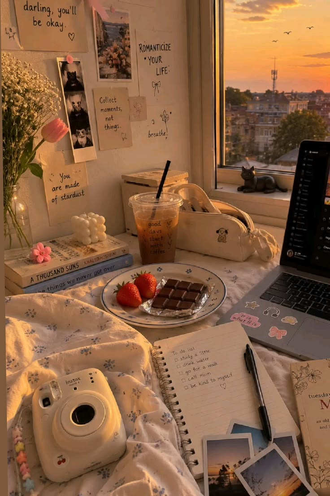

Little things that make an ordinary day special • ✨

Sometimes a warm cup of tea, coffee, or hot chocolate is all I need to slow down and enjoy the moment.
A favorite song can completely change my mood and make even an ordinary afternoon feel a little brighter.
Fresh flowers, a beautiful sunset, a good book, or a funny conversation with someone I love can make my day better.
A perfect day isn't about having everything. It is about noticing the little things that already make life feel special.
“Sometimes the little things are the big things.” ✨
← Back to Diaries